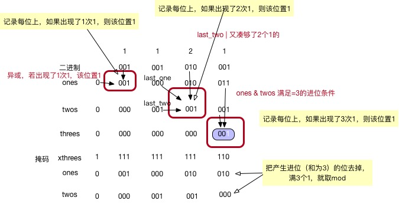

|
|
☰ 目录
137 Single Number IIGiven a non-empty array of integers, every element appears three times except for one, which appears exactly once. Find that single one. Note: Your algorithm should have a linear runtime complexity. Could you implement it without using extra memory? Example 1: Example 2: 解1- 用 map 记录一下； 2- 法二：还是利用位运算才有办法实现不用额外空间，就是遍历32次每次记录某位的出现的次数，如果不能被三整除，说明那个出现一次的就在该位有值，那么ans 或该位一下就可以了。 法三：还是位运算，这里利用二进制模拟a进制的方法。对于此题，a为3. 点这里分析和拓展的很好： 对于除出现一次之外的所有的整数，其二进制表示中每一位1出现的次数是3的整数倍，将所有这些1清零，剩下的就是最终的数。用ones记录到当前计算的变量为止，二进制1出现“1次”（mod 3 之后的 1）的数位。用twos记录到当前计算的变量为止，二进制1出现“2次”（mod 3 之后的 2）的数位。当ones和twos中的某一位同时为1时表示二进制1出现3次，此时需要清零。即用二进制模拟三进制计算。最终ones记录的是最终结果。 推荐这种，ones 用来记录，该位“1”累计次数mod 3 后为1次的，则该位置1； twos 记录该位上，累计该位“1” 出现次数mod 3 后为2次的，则该位置值1； threes 记录该位上，累计该位“1” 出现次数为3次的，当前会产生进位（作为临时变量），则该位置值1；  |